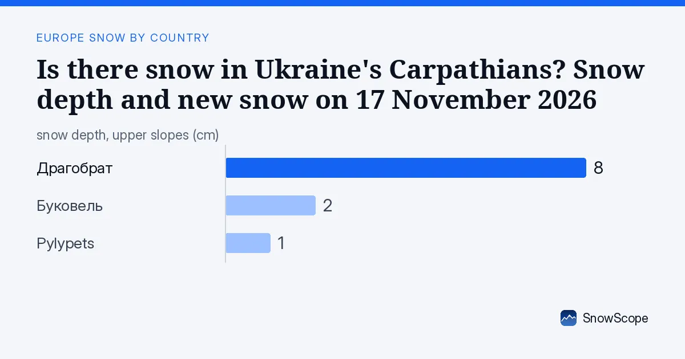

Ukraine 6% white, Poland 11%: Carpathian snow divide widening
Ukraine's mountain snow shrank sharply yesterday: only 6% of the high country is white today, half Poland's coverage across the border. The gap is real and widening as a thaw eats into early November's thin layer.
See the live snow forecast for Драгобрат in the SnowScope appSnow depth, powder alerts and the 3D map, free.
Why Ukraine is whiter than the number suggests
Six percent sounds bleak, but the number tells only part of the story. Ukraine's snow is concentrated above 1500 m, where 83% of the high peaks wear white today. Below that, almost nothing survives. Poland's 11% is spread across its own ski zone, so it sounds better but masks similar height dependency.
The real driver is the thaw of the past week. Snow coverage dropped from 5610 km2 seven days ago to 1080 km2 today—a loss of 4530 km2. Yesterday alone, 570 km2 vanished. That speed matters: it means the snow that fell in mid-November is already patchy and sinking into bare rock at lower levels.
| Country | White | Deepest resort | Next 7 days |
|---|---|---|---|
| Ukraine | 6 % | Драгобрат | 21 cm |
| Romania | 12 % | Havas Bucsin | 21 cm |
| Poland | 11 % | Karpacz | 13 cm |

Poland's neighbour advantage
Poland leads Ukraine in coverage not by much snow but by stability. Its best resort, Karpacz, sits at 44 cm, well ahead of Ukraine's leader Драгобрат at 8 cm. That gap reflects both more early-season precipitation and slightly higher elevations in Poland's ski areas.
Romania, Ukraine's other neighbour, also outpaces it at 12% white. The pattern across the eastern Carpathians is clear: thaw is hitting Ukraine's lower resorts hardest, while Poland and Romania retain more of November's bounty at their peak elevations.

Where snow survives in Ukraine today
Three resorts have skiable snow on the ground right now: Драгобрат leads with 8 cm at 1706 m, followed by Буковель at 2 cm and Pylypets at 1 cm. The Borzhava ridge dominates recent snowfall with 12 cm in the past three days, outpacing the Gorgany (11 cm) and Chornohora (10 cm). Height is everything: the snow line sits at 1400 m, so anything below that is bare or nearly bare.
Only 260 km2 across the country received 5 cm or more new snow in the past 72 hours. The story of Ukraine's snow right now is not about widespread cover but about survival in the high peaks.
Friday brings the real test
The model shows 8 cm on Friday 20 November as the snowiest day in the next week, with up to 12 cm possible in three days and 21 cm by next Tuesday. That fresh snow will reset the game. Ukraine, Poland and Romania will all climb their coverage numbers as a cold front moves in.
For now, Ukraine remains the driest of the three: 6% white versus Poland's 11% and Romania's 12%. But by next Sunday, all three should be much whiter. The key is what happens to that Friday snow—whether it sticks or melts in another warm spell.
What the bands reveal
Below 1000 m, there is almost no snow. Between 1000 and 1500 m, only 16% of the area is covered. The jump comes above 1500 m, where 83% of the zone is white and the mean depth reaches 4 cm. This sharp boundary shows that early-season snow in Ukraine is fragile and confined to the summits.
Poland's distribution is similar in shape but higher in total coverage, reflecting more accumulated snow at all elevations. The Carpathians are steep, so small vertical differences mean big changes in survival.
Trend: recovery coming
Yesterday, 570 km2 of Ukraine's snow vanished in a single day. The trend shows Драгобрат taking the lead from other resorts as the thaw sorted snow by elevation. By Friday, that trend should reverse: fresh precipitation will rebuild coverage across all three countries, and Ukraine's white share will begin to climb.
Check the SnowScope app for live updates on depth and coverage as the front arrives.
Tips for skiers
- Драгобрат now holds the most reliable snow in Ukraine at 1706 m. Expect 17 cm there by Friday; it will be the safest bet for skiing early next week.
- Below 1500 m, rocks and bare patches dominate. Stay on marked runs and check the official avalanche bulletin for the Carpathians before going off-piste.
- Watch the thaw window this week. Snow that falls Friday may compact or melt if temperatures rise again. The 8 cm forecast for Friday is a one-day peak; total accumulation over three days is only 12 cm.
- By next Tuesday, up to 21 cm is modelled across the region. That will be the turn. Ukraine's coverage will climb as the fresh snow sticks and spreads to lower elevations.
- Friday 20 November is your target date. The snowiest conditions will come after that, once the front settles.
About these numbers
Resort snow depths are the deepest snow on the resort's upper slopes from the SnowScope snow model (about 1 km, run of 17 November); they are estimates for an area, not a measurement at one point. Station values are measurements on the date shown. Forecasts can change. Always read the official avalanche bulletin before going off-piste.
Cite this report
For research, teaching or the press: the numbers and charts are free to reuse under CC BY 4.0 with this citation.
SnowScope (2026), Ukraine 6% white, Poland 11%: Carpathian snow divide widening, https://snowscope.app/blog/en/2026/11/ukraine-snow-report-17-november-2026.html, accessed 2026-11-17
SnowScope (Atlas Labs). (2026, November 17). Ukraine 6% white, Poland 11%: Carpathian snow divide widening. SnowScope snow reports. https://snowscope.app/blog/en/2026/11/ukraine-snow-report-17-november-2026.html
BibTeX
@misc{snowscope2026ukrainesnowreport17novem,
author = {{SnowScope (Atlas Labs)}},
title = {Ukraine 6% white, Poland 11%: Carpathian snow divide widening},
year = {2026},
month = nov,
howpublished = {\url{https://snowscope.app/blog/en/2026/11/ukraine-snow-report-17-november-2026.html}},
note = {Published 2026-11-17 12:53 UTC; accessed 2026-11-17}
}· CC BY 4.0 · Methods, data and tools →
Драгобрат: snow and temperature by height, this winter vs last (tools) →
Follow Драгобрат
Free: a message when fresh snow is coming, and the forecast every morning.
More snow reports

Tornik on Zlatibor had up to 39 cm on its upper slopes on 15 November 2026; by Wednesday it had melted. Kopaonik barely turned white. The week day by day and what comes next.

Savin Kuk above Žabljak picked up 22 cm of snow from 13 to 19 November and still has 6 cm today. Kolašin 1450 and 1600 are bare. The week day by day, and the next chances.

Up to 30 cm of snow fell on northern Velebit and Bjelolasica on Friday 13 November 2026. By Tuesday it was gone. Day by day, what the mountains kept, and when snow comes back.